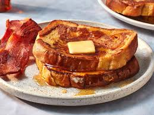

Beautiful French Toast Recipe
This is the best French toast recipe. It's different because it uses flour.
I have given it to some friends and they've all liked it better than the French toast they usually make!
Ingredients
- Flour
- Milk
- Eggs
- Sugar
- Vanilla
- Cinnamon
- Salt
- Bread
Steps
- Slowly whisk the milk into the flour, then whisk in the remaining ingredients.
- Saturate the bread slices in the batter.
- Cook the French toast on a lightly oiled griddle or pan until golden on both sides.
Home